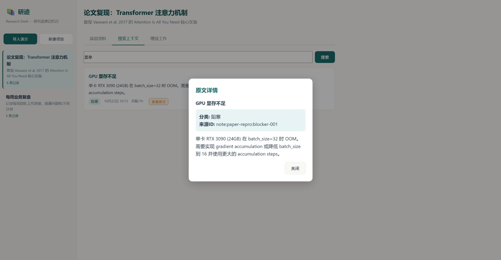

本地优先的研究进度记忆台 — 基于 PowerContext 真实 Runtime 构建
2026 OceanBase 竞赛 · 生态赛道研迹是一个面向研究者的本地优先进度管理工具。它将研究笔记、进展记录、阻塞问题和决策文档统一摄入 PowerContext 的 Memory 系统，提供中文全文检索、精确引用回溯和智能继续工作清单。
所有数据存储在本地 SQLite 数据库中，不依赖外部服务。通过 PowerContext 的 BuiltinRuntime 实现 Scope 隔离、Source Capture、Memory Flush 和 FTS5 全文检索。
基于 SQLite FTS5 的中文分词搜索，支持"显存""注意力""支付"等关键词，负例搜索返回零结果。
搜索结果携带 MemoryCitation，点击即可回查原文、分类和来源 ID。
Source 不可变，状态变更通过版本化 Source ID（:r2、:r3…）实现，旧引用完整保留。
重复导入准确报告新增/跳过数量；重启后自动从数据库恢复所有项目和笔记计数。

真实浏览器截图：搜索关键词"显存"，点击"查看原文"弹出详情弹窗，显示分类（阻塞）、来源 ID 和完整笔记内容。 数据为虚构
研究者复现 Vaswani et al. 2017 的 Transformer 论文时，将参考文献、实验进度、阻塞问题（如 GPU 显存不足）、架构决策和待办事项逐一记录为笔记。通过搜索"显存"快速定位到阻塞条目，点击引用回溯查看完整上下文。
团队每周记录完成事项、阻塞问题、决策和参考资料。研迹自动按类别整理为"继续工作"清单，成员可以更新任务状态（如将"待办"改为"已完成"），系统保留旧版本引用以确保历史可追溯。
多个研究项目共享同一 Memory 索引。搜索"注意力"可同时检索到论文复现项目中的理论笔记和业务复盘中的相关讨论，每个结果都携带项目归属和精确引用。
idempotency_key 和 ScopeExternalReference 以支持重启恢复。
runtime.sources.for_scope(scope_id).capture(CaptureSource(...)) 本地捕获笔记，版本化 Source ID 格式为 note:{project_id}:{note_id}（v1）或 note:{project_id}:{note_id}:r{N}（vN）。
runtime.memory.for_scope(scope_id).flush()，确定性管线将笔记提取为 Memory 条目并建立 FTS5 索引。
SearchMemoryRequest(query, mode="fts") 检索，从 MemoryHit 构造 MemoryCitation 实现精确回溯。
increment_count=False），保持逻辑笔记计数准确，旧引用仍可回查历史版本。
本项目完整使用了 PowerContext BuiltinRuntime 的核心 API，形成从摄入到检索的闭环：
| API | 用途 | 关键细节 |
|---|---|---|
runtime.scopes.create_scope() |
创建项目 Scope | idempotency_key + external_references |
runtime.sources.for_scope().capture() |
本地摄入笔记 | CaptureSource(source_id, content, metadata) |
runtime.memory.for_scope().flush() |
触发候选管线 | 确定性管线，无需 LLM |
runtime.memory.for_scope().search() |
全文检索 | SearchMemoryRequest(mode="fts") |
runtime.records.for_scope().get_source() |
读取 Source 元数据 | JSON 编码的 content 字段 |
runtime.memory.for_scope().list() |
列出 Memory 条目 | 用于继续工作清单 |
Source 不可变，状态更新通过创建新版本（:r2、:r3…）实现。管线按逻辑 note_id 分组，取最新版本文本，引用所有版本。
SourceRecord.content 仅存储文本，元数据通过 JSON 嵌入：{"text": "...", "metadata": {"title": "...", "category": "..."}}
导入前检查 Source 是否存在，已存在则跳过。准确返回 {projects, notes, skipped}。
启动时调用 reload_projects()，从数据库重新发现所有 Scope，重建版本缓存和逻辑笔记计数。
以下功能已通过 verify.py 实际运行验证：
| 验证项 | 结果 |
|---|---|
| 核心流程（capture → flush → search → citation） | ✓ 通过 |
| 中文全文检索（"显存""注意力""支付"） | ✓ 通过 |
| 负例搜索（不存在的关键词返回 0 结果） | ✓ 通过 |
| 引用回溯（MemoryCitation 回查原文） | ✓ 通过 |
| 重启恢复（项目、笔记计数、搜索） | ✓ 通过 |
| 幂等导入（重复导入报告新增/跳过） | ✓ 通过 |
| 状态更新（版本化 Source，旧引用保留） | ✓ 通过 |
| 边界情况（空名称、非法类别、未知项目） | ✓ 通过 |
| XSS 防护（事件绑定 + safeUrl） | ✓ 通过 |
| 同源 CORS（无 allow_origins=["*"]） | ✓ 通过 |
以下内容将在后续迭代中补充：
| 仓库 | https://github.com/rzx110/oceanbase_3-zgl.git |
|---|---|
| 分支 | 2026-competition-ecosystem |
| PowerContext | git commit 9db1753434162c0aa7c9f1189a1722e617880a52 |
| 依赖 | FastAPI, uvicorn, aiosqlite |
| 许可证 | Apache 2.0（遵循 PowerContext） |
| 演示数据 | 虚构内容，不代表真实研究项目或业务指标 虚构 |